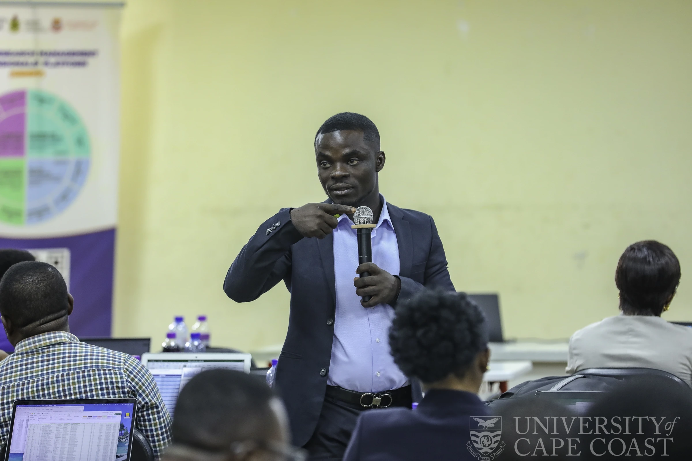

Inflation dynamics
Inflation persistence, high-inflation episodes, producer–consumer price relationships, oil shocks and the evolution of inflation research in Ghana and West Africa.
My research agenda is centred on inflation, monetary and financial economics, advanced econometrics and machine-learning applications. I am especially interested in heterogeneous relationships that are obscured when analysis focuses only on average effects.
The themes share a common methodological concern: economic relationships are often non-linear, time-varying and state-dependent.
Inflation persistence, high-inflation episodes, producer–consumer price relationships, oil shocks and the evolution of inflation research in Ghana and West Africa.
Interest-rate and inflation relationships, conditional Fisher effects, monetary adjustment and how policy transmission changes across economic conditions.
Commodity-price shocks, banking-sector financial soundness, macro-financial interconnectedness and changing market behaviour.
Predictive modelling, ensemble learning and SHAP-based explainability for macroeconomic classification and forecasting problems.
Frequency-dependent information flows, ESG markets, regional stock-market relationships and wavelet-based market connectedness.
Cross-cutting interest
I also work on reproducible analytical tools, bibliometric and systematic-review workflows, data documentation and methodological training for researchers and postgraduate students.
My research and teaching engage both econometric and computational methods. The aim is not methodological accumulation; it is selecting tools that reveal the structure of the economic question.
Inflation & oil shocks
Investigates which dimensions of oil-price shocks drive inflation across West African economies.
Monetary economics
Uses time-frequency and quantile evidence to study whether the nominal interest rate–inflation relationship changes across states and horizons.
Price transmission
Examines the roles of exchange-rate dynamics and global uncertainty in the co-movement of producer and consumer prices in Ghana.
Household resilience
Collaborative research on household recovery after livelihood shocks in rural Ghana, with evidence from Appiatse.
Explainable ML
Applies machine learning, ensemble methods and SHAP explainability to high-inflation episodes across West Africa.
Research direction
My current development work is expanding toward causal inference, Bayesian Networks and dynamic probabilistic modelling through advanced training and applied R workflows.

I am developing and maintaining an R package designed to support quantile-on-quantile regression workflows for applied researchers. The project is being prepared as a reusable research tool rather than a one-off script.
The package work focuses on analytical workflow, output organisation and visualisation, with particular attention to usability for economists and applied researchers who need to examine how relationships vary jointly across the distributions of two variables.
I presented the methodological motivation and package concept in the 2026 research seminar, “Measuring What Standard Models Miss: Quantile-on-Quantile Regression and the qqr Package for R.”
My strongest collaboration fit is in applied macroeconomics, financial economics, econometrics, explainable machine learning and quantitative research-methods projects with a clear empirical question.